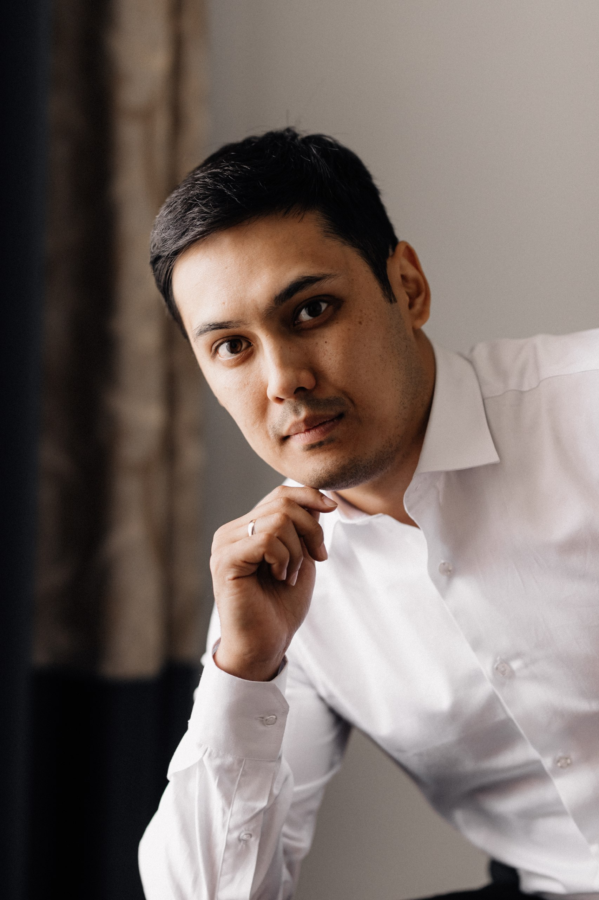

I am able to handle multiple tasks on a daily
basis, use a creative approach to problem- solving. Team player and great at time
management. I am always energetic and eager
to learn new skills.
I truly believe that my huge motivation and inner desire to work hard
will result in best outcome you expect.
- Education
-
IT-Run Academy
Python courses
American University of Central Asia
Master of Business Administration
Kyrgyz National University
International Relations
- Experience
-
Change Fitness General Manager - Bishkek,
2019-2020
- Recruiting, training, and supervising staff.
- Enhancing profitability by organising and delivering an
appropriate range of fitness activities and programmes.
- Planning, budgeting, monitoring.
- Led thirty employees in company.
Capital Bank Credit Specialist - Bishkek,
2018 - 2019
- Assist in the financial analysis, credit underwriting and
approval process.
- Assist in the recovery of unpaid dues
- Achievements
-
- Promotion on the career ladder in Fitness industry from
reception position to manager of the company
(07/2019 - 06/2020).
- Ensuring the company's profitability through fulfillment of obligations at
the highest level.
- Personal project
-
Scholar.kg (2019 - Present)
- Language skills
-
- English
(working proficiency)
- Russian
(native or bilingual proficiency)
- Kyrgyz
(native or bilingual proficiency
- Interests
- IT technology, Business administration, Sport